O tratamento da obesidade começa quando deixamos de culpar o paciente e passamos a compreender a doença. É assim que construímos resultados duradouros.
Acompanhamento médico individualizado para emagrecimento saudável e sustentável — sem fórmula mágica, sem promessa milagrosa. Atendimento online e presencial em Santos/SP.
Você já tentou de tudo — e ainda assim o peso volta?
- Dietas restritivas que funcionam por um tempo e depois perdem o efeito
- Efeito sanfona: emagrece, engorda, emagrece de novo
- Uso de medicação para emagrecer sem o efeito desejado
- Recuperação do peso perdido após interromper o tratamento
- Impacto na autoestima e na relação com o próprio corpo
O excesso de peso também está ligado a consequências metabólicas sérias: diabetes tipo 2, hipertensão, apneia do sono e colesterol alto.
A boa notícia é que existe um caminho médico comprovado.
Quem é a Dra. Nathália Rocha
CRM/SP 268390 · Médica com atuação em Obesidade, Emagrecimento e Saúde Metabólica.
Atualização contínua em Obesidade e Emagrecimento. Prescrição criteriosa de vitaminas, minerais e antioxidantes, respeitando as necessidades individuais.
"O emagrecimento que propomos é o emagrecimento saudável, aliando a estética como bônus. As prioridades são a saúde e a qualidade de vida — a estética vem como consequência."
Atendimento presencial no Edifício Livance — Av. Ana Costa, 228, 20º andar, Gonzaga, Santos/SP — e também online.
Conheça o espaço de atendimento
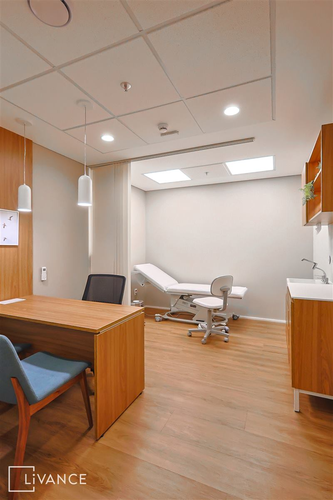
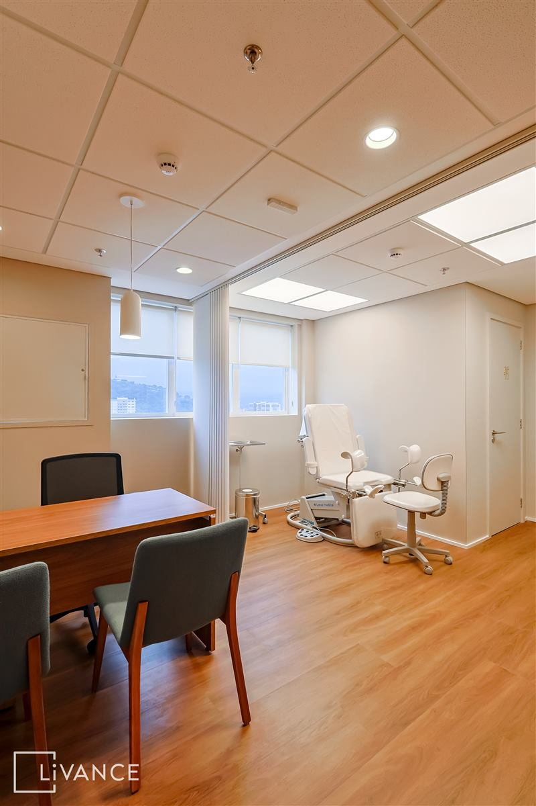
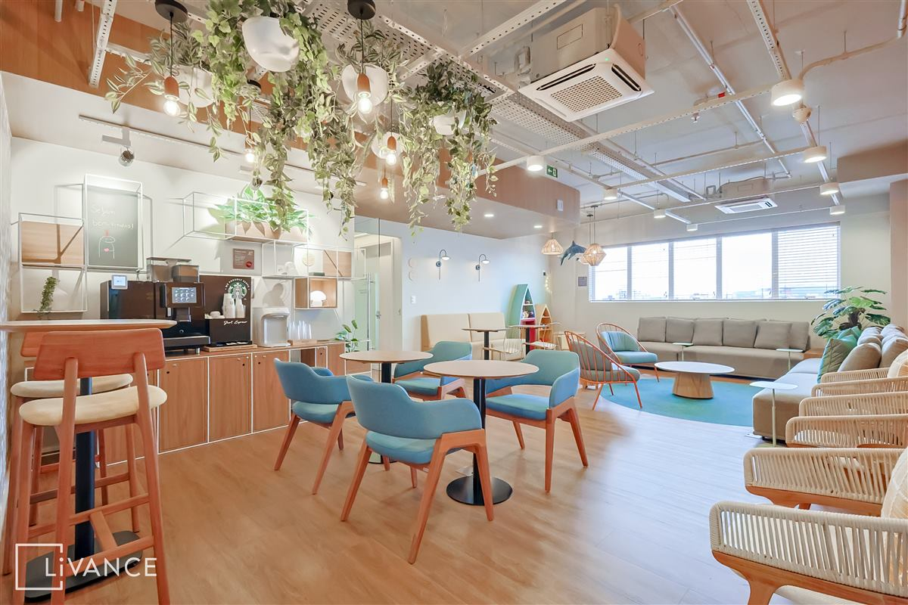
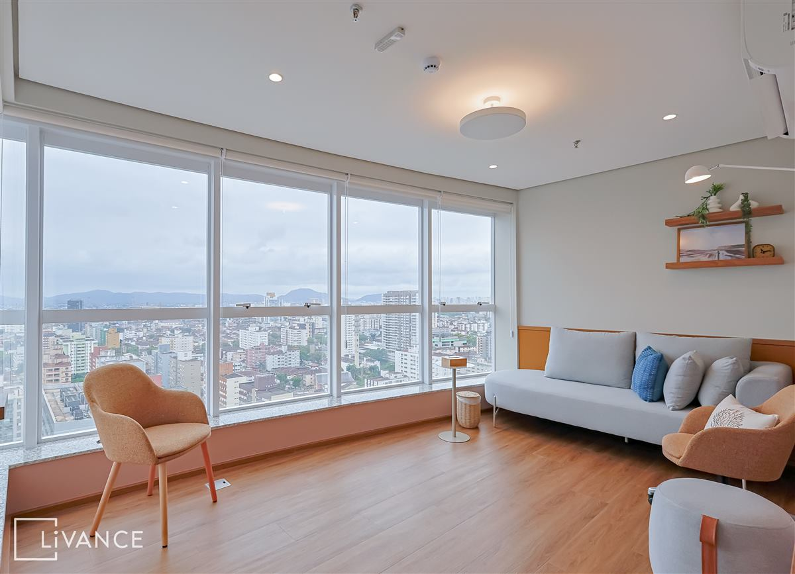
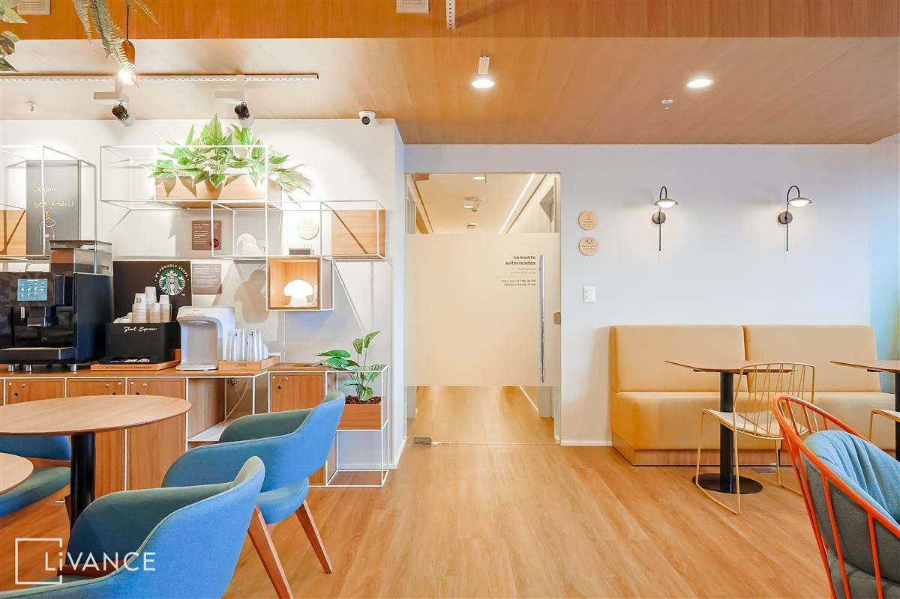
Chega de tentar sozinho. Existe um tratamento para você.
Avaliação Metabólica Completa
Investigação das causas metabólicas e hormonais por trás do seu peso, com exames direcionados.
Tratamento Individualizado
Plano terapêutico com metas claras e construção de novos hábitos, com seguimento contínuo durante todo o tratamento.
Acompanhamento Pessoal
Assessoria contínua para ajustar o plano e tirar dúvidas ao longo de todo o tratamento.
Abordagem Integrada
Saúde, qualidade de vida e estética caminhando juntas — sem soluções isoladas ou milagrosas.
Como funciona o acompanhamento
Agendamento
Você marca sua avaliação inicial pelo site ou WhatsApp.
Consulta — Avaliação Inicial
Solicitação de exames, avaliação do sono e dos hábitos, análise de custos de medicamentos e procedimentos, e prescrição inicial, se indicada.
Plano Terapêutico
Execução do plano individualizado, com metas e construção de novos hábitos.
Acompanhamento
Assessoria contínua, reavaliação e ajustes conforme sua resposta ao tratamento.
Esse acompanhamento é para você que:
- Já tentou dietas restritivas sem sucesso duradouro
- Tem histórico familiar de obesidade ou doenças metabólicas
- Quer emagrecer com acompanhamento médico, de forma sustentável
- Busca entender as causas do próprio peso, não só tratar sintomas
- Valoriza saúde e qualidade de vida, com a estética como bônus
Definitivamente não é para quem:
- Busca soluções milagrosas ou quer emagrecer da noite para o dia
- Não quer acompanhamento médico contínuo
- Procura apenas prescrição de medicação sem mudança de hábitos
Resultados e depoimentos
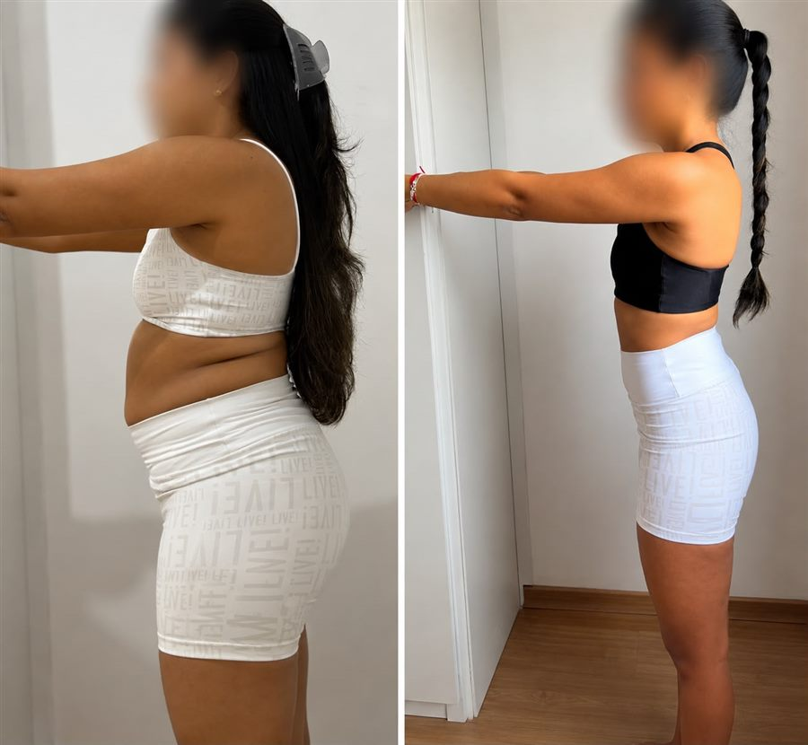
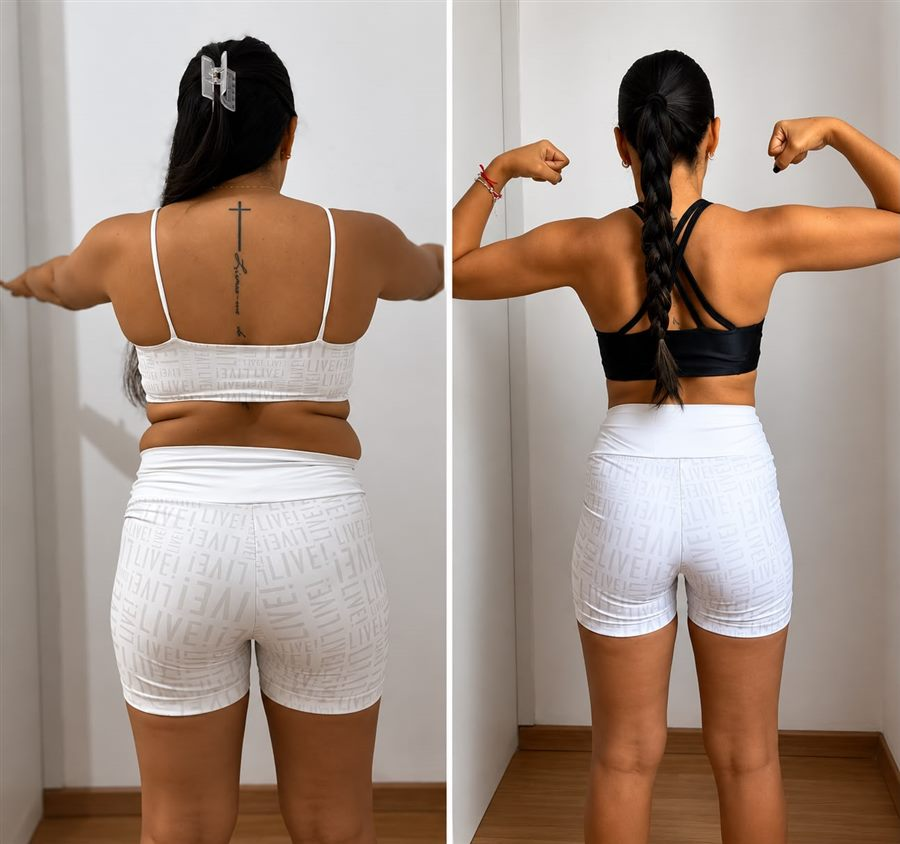
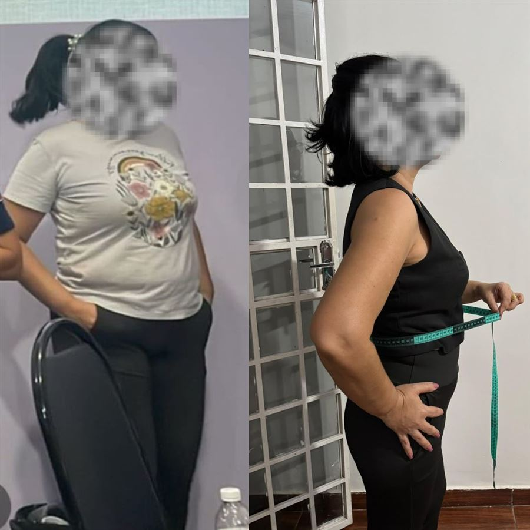
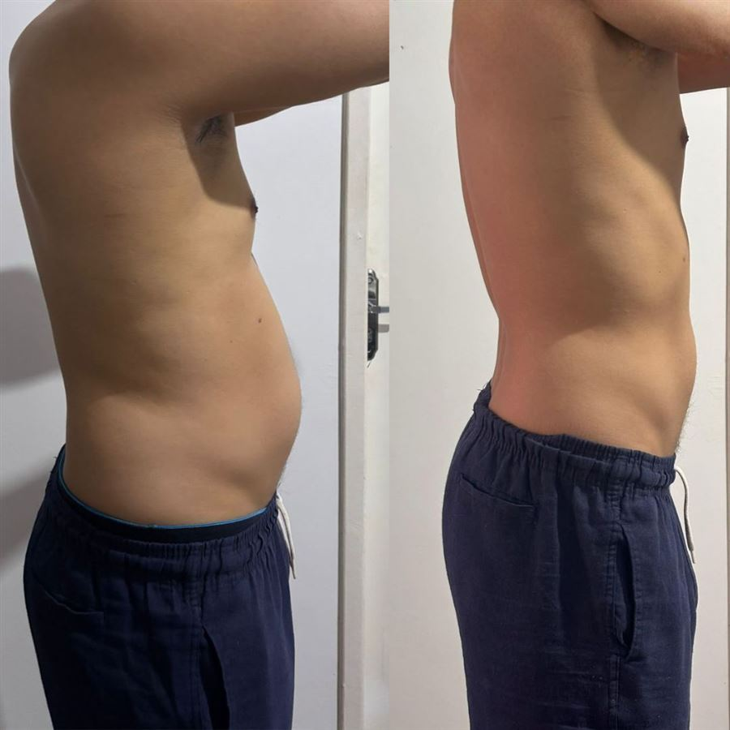
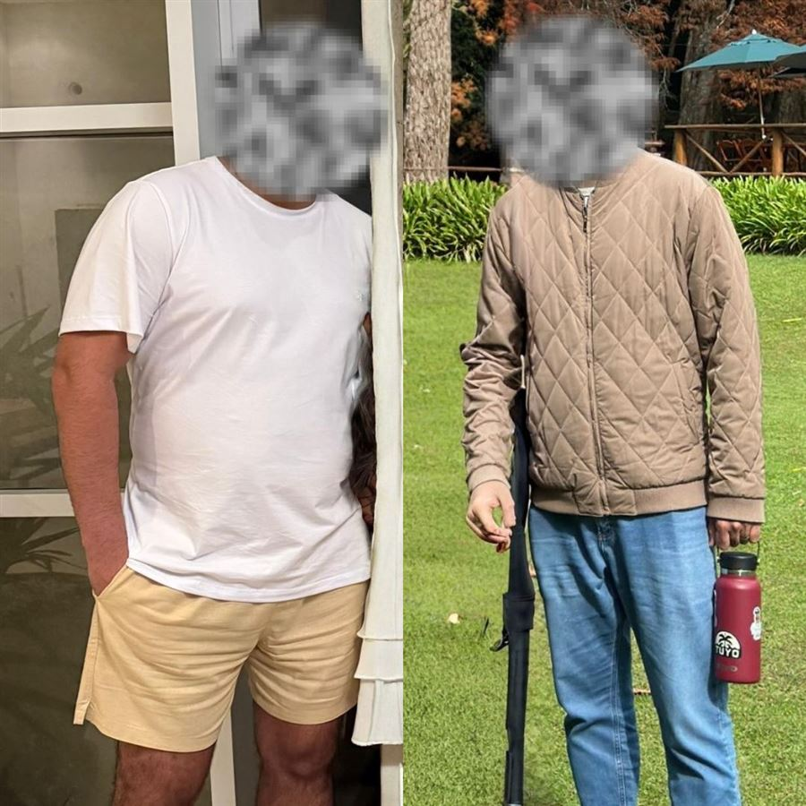
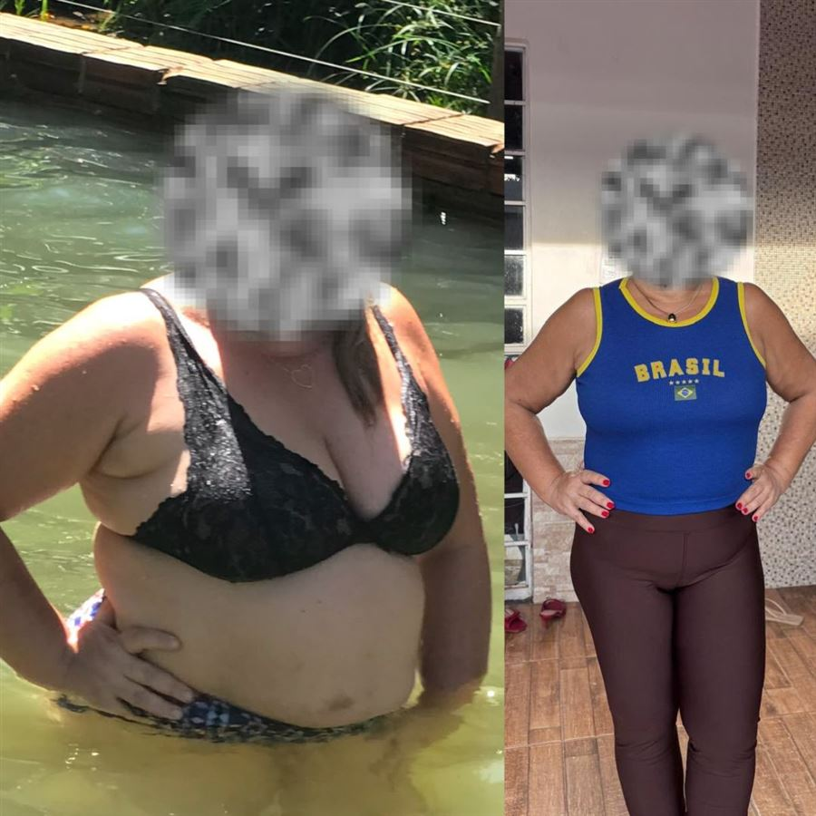
Resultados individuais. Tratamento sob acompanhamento médico. Fotos e depoimentos publicados com autorização dos pacientes.
Perguntas frequentes
Sobre o tratamento
Sim, quando há indicação médica. As canetas para emagrecimento ajudam a reduzir o apetite, aumentar a saciedade e facilitar a perda de peso. Entretanto, os melhores resultados acontecem quando o tratamento é associado à reeducação alimentar, atividade física e mudanças no estilo de vida. Elas não fazem "milagre" e cada paciente responde de forma diferente.
Sim. A obesidade é uma doença crônica reconhecida pelas principais sociedades médicas e pela Organização Mundial da Saúde. Ela aumenta o risco de diversas condições, como diabetes, hipertensão, doenças cardiovasculares, apneia do sono e problemas articulares. Por isso, o tratamento deve ir além da estética, tendo como objetivo principal a promoção da saúde e da qualidade de vida.
Os efeitos mais comuns são náuseas, sensação de estômago cheio, azia, prisão de ventre ou diarreia, principalmente no início do tratamento. Na maioria dos casos, esses sintomas são leves e costumam melhorar com o tempo. O acompanhamento médico é essencial para ajustar a dose e tornar o tratamento mais confortável e seguro.
O risco de recuperar parte do peso existe se não houver manutenção dos hábitos saudáveis. A obesidade é uma doença crônica e, em muitos casos, o tratamento precisa ser contínuo ou de longo prazo. Durante o acompanhamento, o objetivo é desenvolver estratégias para manter os resultados e decidir, de forma individualizada, o melhor momento para reduzir ou suspender a medicação, quando isso for possível.
Não. O tratamento da obesidade é individualizado e envolve mudanças no estilo de vida, alimentação, atividade física, qualidade do sono e, quando necessário, o uso de medicamentos. Em alguns casos, outras abordagens, como cirurgia bariátrica, podem ser indicadas. O mais importante é elaborar um plano de tratamento adequado para cada paciente, considerando sua saúde, seus objetivos e sua rotina.
Sim. Na avaliação inicial são solicitados exames para investigar as causas metabólicas e hormonais do peso e garantir que o tratamento escolhido seja seguro e adequado ao seu quadro de saúde.
Objeções comuns
O tempo varia de pessoa para pessoa, pois depende do metabolismo, das comorbidades e da adesão ao plano terapêutico. Por isso o acompanhamento é feito com reavaliações periódicas para ajustar a estratégia conforme a resposta de cada paciente.
O investimento varia conforme o plano terapêutico definido na consulta, que pode incluir exames, medicação e acompanhamento. Na avaliação inicial, os custos de medicamentos e procedimentos são discutidos abertamente, para que a decisão seja consciente e sem surpresas.
Tentar sozinho, sem investigar as causas metabólicas e hormonais do ganho de peso, é um dos motivos mais comuns de recaída. O acompanhamento médico individualizado busca entender o que não funcionou antes e construir um plano que sua rotina realmente sustente.
Não. O foco não é restrição extrema, e sim a construção de hábitos sustentáveis a longo prazo, sempre alinhados ao seu contexto de vida.
Confiança e segurança
Além das consultas, o acompanhamento inclui assessoria para dúvidas ao longo do tratamento, especialmente durante os ajustes do plano terapêutico.
Na avaliação inicial, é feita a solicitação de exames, avaliação do sono e dos hábitos de vida, análise de custos de medicamentos e procedimentos e, se indicado, a prescrição do tratamento.
Localização e contato
Endereço
Av. Ana Costa, 228, 20º andar — Edifício Livance
Gonzaga, Santos/SP — CEP 11060-002
WhatsApp
(13) 99744-4419
E-mail
dranathaliarocha.santos@gmail.com
Instagram
@dra.nathaliarochaferreira
Av. Ana Costa, 228, 20º andar
Edifício Livance — Gonzaga, Santos/SP
Oferta exclusiva — só pelo site
Garanta 10% de desconto
na sua primeira consulta
Clique no botão abaixo e a mensagem já vai preenchida com o seu cupom — é só enviar pelo WhatsApp para confirmar o desconto.
* Válido para primeira consulta. Sujeito à disponibilidade de agenda.